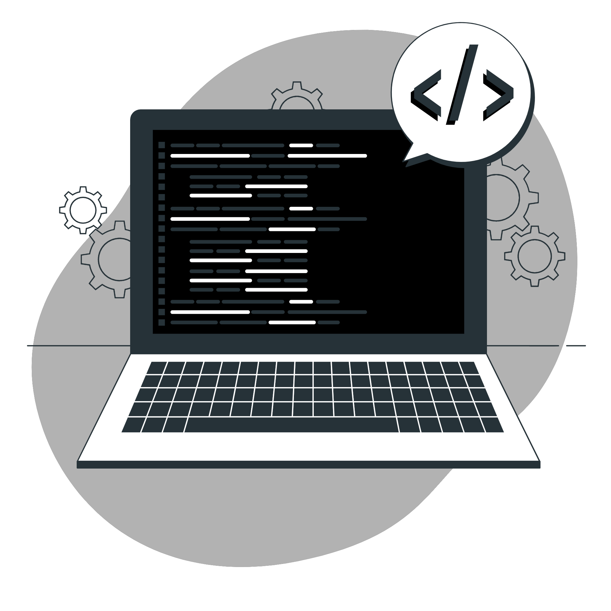

Curso
Sobre
O curso foca no estudo integrando as áreas de Engenharia Elétrica (hardware) e Ciência da Computção (software), também dando base para as áreas de gerenciamento de projetos, modelagem, desenvolvimento e avaliação de sistemas. Além disso o Engenheiro de Computação aborda os mais diversos aspectos tecnológicos, tais como: redes de computadores, comunicação de dados, bancos de dados, computação gráfica, sistemas digitais, circuitos elétricos, robótica e automação, entre outros. Em geral, o curso de Engenharia de Computação estuda, de forma profunda e abrangente, o desenvolvimento e gerência de sistemas digitais e elétricos, suas aplicações e tecnologias relacionadas.
 O engenheiro de computação também poderá atuar em organizações que necessitem de instalação, operação e manutenção da rede de computadores, transmissão de dados e sistemas de automação comercial e industrial. Há ainda a opção de se manter no meio acadêmico, para dar aulas em universidades e desenvolver pesquisas. O tipo de formação para o curso de Engenharia de Computação é: bacharelado.
Como é o Curso
O curso de Engenharia de Computação habilita a pessoa para trabalhar com o desenvolvimento e planejamento de softwares e hardwares. Com essa formação, ela poderá projetar, programar e gerenciar sistemas computacionais, além de criar e projetar computadores, periféricos e circuitos.
De acordo com o Ministério da Educação (MEC), a obtenção de qualquer diploma em Engenharia está condicionada à produção de um trabalho de conclusão de curso (TCC) e estágio obrigatório supervisionado de no mínimo 160 horas.
O MEC também estabelece diretrizes sobre quanto tempo dura o curso de Engenharia de Computação: é obrigatório que a graduação tenha pelo menos 3.200 horas totais. A duração média é de 5 anos.
De acordo com as Diretrizes Curriculares Nacionais definidas pelo Ministério da Educação, o curso de Engenharia de Computação deve contar com os seguintes conteúdos básicos e tecnológicos:
- Projeto de sistemas digitais;
- Projeto de circuitos integrados;
- Microeletrônica e nanoeletrônica;
- Processamento digital de sinais;
- Comunicação de dados;
- Sistemas de controle;
- Automação de projeto;
- Transdutores;
- Teoria dos semicondutores;
- Teoria eletromagnética;
- Eletrônica digital e analógica;
- Circuitos elétricos;
- Eletricidade;
- Física.
Faculdades

 O aluno, para participar do curso, deve ter vontade de se aprofundar em temas importantes de gestão e de tecnologia de sistemas computacionais. Ter vontade de liderar e de comandar é fundamental para o especialista que pode assumir um posto de comando em empresas. Também, entende-se que o espírito empreendedor pode auxiliar o aluno para, com os conhecimentos trabalhados nas disciplinas do curso, montar sua própria empresa ou trabalhar como um consultor no mercado de trabalho. Público-alvo: engenheiros, tecnólogos, gestores de TI em empresas, desenvolvedores de software, empreendedores, produtores na área de tecnologia e demais profissionais graduados que desejam especialização no mundo da tecnologia da informação.
O aluno, para participar do curso, deve ter vontade de se aprofundar em temas importantes de gestão e de tecnologia de sistemas computacionais. Ter vontade de liderar e de comandar é fundamental para o especialista que pode assumir um posto de comando em empresas. Também, entende-se que o espírito empreendedor pode auxiliar o aluno para, com os conhecimentos trabalhados nas disciplinas do curso, montar sua própria empresa ou trabalhar como um consultor no mercado de trabalho. Público-alvo: engenheiros, tecnólogos, gestores de TI em empresas, desenvolvedores de software, empreendedores, produtores na área de tecnologia e demais profissionais graduados que desejam especialização no mundo da tecnologia da informação.